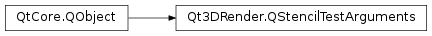

Qt3DRender.QStencilTestArguments¶
Synopsis¶
Functions¶
- def
comparisonMask() - def
faceMode() - def
referenceValue() - def
stencilFunction()
Slots¶
- def
setComparisonMask(comparisonMask) - def
setReferenceValue(referenceValue) - def
setStencilFunction(stencilFunction)
Signals¶
- def
comparisonMaskChanged(comparisonMask) - def
faceModeChanged(faceMode) - def
referenceValueChanged(referenceValue) - def
stencilFunctionChanged(stencilFunction)
Detailed Description¶
The
QStencilTestArgumentsclass specifies arguments for stencil testThe
Qt3DRender.QStencilTestArgumentsclass specifies the arguments for the stencil test.
-
PySide2.Qt3DRender.Qt3DRender.QStencilTestArguments.StencilFaceMode¶ This enumeration holds the values for stencil test arguments face modes
Constant Description Qt3DRender.QStencilTestArguments.Front Arguments are applied to front-facing polygons. Qt3DRender.QStencilTestArguments.Back Arguments are applied to back-facing polygons. Qt3DRender.QStencilTestArguments.FrontAndBack Arguments are applied to both front- and back-facing polygons.
-
PySide2.Qt3DRender.Qt3DRender.QStencilTestArguments.StencilFunction¶ Enumeration for the stencil function values
Constant Description Qt3DRender.QStencilTestArguments.Never Never pass stencil test Qt3DRender.QStencilTestArguments.Always Always pass stencil test Qt3DRender.QStencilTestArguments.Less Pass stencil test if fragment stencil is less than reference value Qt3DRender.QStencilTestArguments.LessOrEqual Pass stencil test if fragment stencil is less than or equal to reference value Qt3DRender.QStencilTestArguments.Equal Pass stencil test if fragment stencil is equal to reference value Qt3DRender.QStencilTestArguments.GreaterOrEqual Pass stencil test if fragment stencil is greater than or equal to reference value Qt3DRender.QStencilTestArguments.Greater Pass stencil test if fragment stencil is greater than reference value Qt3DRender.QStencilTestArguments.NotEqual Pass stencil test if fragment stencil is not equal to reference value
-
PySide2.Qt3DRender.Qt3DRender.QStencilTestArguments.comparisonMask()¶ Return type: PySide2.QtCore.uintSee also
PySide2.Qt3DRender.Qt3DRender::QStencilTestArguments.setComparisonMask()
-
PySide2.Qt3DRender.Qt3DRender.QStencilTestArguments.comparisonMaskChanged(comparisonMask)¶ Parameters: comparisonMask – PySide2.QtCore.uint
-
PySide2.Qt3DRender.Qt3DRender.QStencilTestArguments.faceMode()¶ Return type: PySide2.Qt3DRender.Qt3DRender::QStencilTestArguments.StencilFaceMode
-
PySide2.Qt3DRender.Qt3DRender.QStencilTestArguments.faceModeChanged(faceMode)¶ Parameters: faceMode – PySide2.Qt3DRender.Qt3DRender::QStencilTestArguments.StencilFaceMode
-
PySide2.Qt3DRender.Qt3DRender.QStencilTestArguments.referenceValue()¶ Return type: PySide2.QtCore.intSee also
PySide2.Qt3DRender.Qt3DRender::QStencilTestArguments.setReferenceValue()
-
PySide2.Qt3DRender.Qt3DRender.QStencilTestArguments.referenceValueChanged(referenceValue)¶ Parameters: referenceValue – PySide2.QtCore.int
-
PySide2.Qt3DRender.Qt3DRender.QStencilTestArguments.setComparisonMask(comparisonMask)¶ Parameters: comparisonMask – PySide2.QtCore.uintSee also
PySide2.Qt3DRender.Qt3DRender::QStencilTestArguments.comparisonMask()
-
PySide2.Qt3DRender.Qt3DRender.QStencilTestArguments.setReferenceValue(referenceValue)¶ Parameters: referenceValue – PySide2.QtCore.intSee also
PySide2.Qt3DRender.Qt3DRender::QStencilTestArguments.referenceValue()
-
PySide2.Qt3DRender.Qt3DRender.QStencilTestArguments.setStencilFunction(stencilFunction)¶ Parameters: stencilFunction – PySide2.Qt3DRender.Qt3DRender::QStencilTestArguments.StencilFunctionSee also
PySide2.Qt3DRender.Qt3DRender::QStencilTestArguments.stencilFunction()
-
PySide2.Qt3DRender.Qt3DRender.QStencilTestArguments.stencilFunction()¶ Return type: PySide2.Qt3DRender.Qt3DRender::QStencilTestArguments.StencilFunctionSee also
PySide2.Qt3DRender.Qt3DRender::QStencilTestArguments.setStencilFunction()
-
PySide2.Qt3DRender.Qt3DRender.QStencilTestArguments.stencilFunctionChanged(stencilFunction)¶ Parameters: stencilFunction – PySide2.Qt3DRender.Qt3DRender::QStencilTestArguments.StencilFunction
© 2018 The Qt Company Ltd. Documentation contributions included herein are the copyrights of their respective owners. The documentation provided herein is licensed under the terms of the GNU Free Documentation License version 1.3 as published by the Free Software Foundation. Qt and respective logos are trademarks of The Qt Company Ltd. in Finland and/or other countries worldwide. All other trademarks are property of their respective owners.